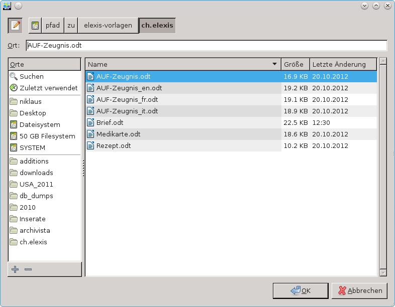
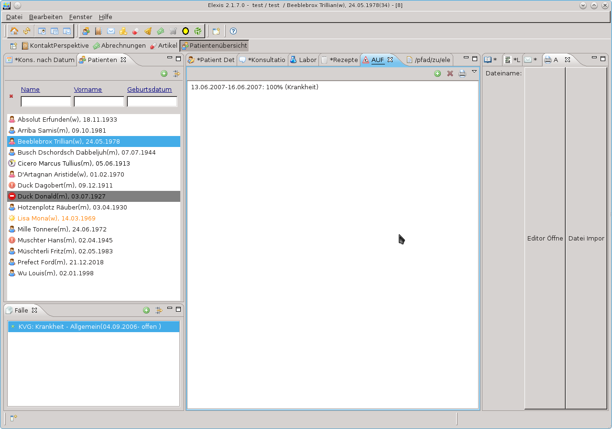

Com.hilotec.elexis.opendocument.feature.feature.group
| Version: | 3.0 |
| Kategorie: | Dokuentenverwaltung |
| Beschreibung: | |
| Author: | |
| Letzte Bearbeitung: | 23. Juni 2014 |
| Voraussetzungen: | Elexis 3.0 |
| Betriebssystem: | Windows, Mac, Linux |
| Lizenz: | Eclipse Public License (EPL) |
Contents
Allgemeines
Freies alternatives Text-Plugin fuer Elexis. Sollte mit jeder Textverarbeitung funktionieren welche das OpenDocument-Format unterstuetzt. Das Plugin generiert ODT-Files und öffnet sie danach mit dem konfigurierten Programm. Zusaetzliche Features:
- Bei Tabellen die durch Platzhalter in ein Dokument ersetzt werden sollen, kann zusaetzlich zum Normalen Platzhalter mit [] eine Tabelle erstellt werden, mit einer Vorlage-Zeile welche in der ersten Spalte den Platzhalter in {} enthält. Dann wird die Zeile kopiert fuer jede einzufuegende Zeile (insbesondere beinhaltet das die Formatierung fuer jede Spalte). Damit lassen sich auch einfach Spaltenbreiten in der Vorlage schon konfigurieren.
- HACK mangels eleganterer Loesung: Text welcher als ganzes (z.B. in einer Tabellenzelle; einzig getesteter Fall) ins Dokument eingefuegt wird, mit _ am Anfang und Ende wird unterstrichen dargestellt.
Ausgangspunkt für alle Text-Dokumente sind jeweils Text-Vorlagen (OpenDocument Textdateien), welche wie folgt aussehen:
Die Platzhalter, welche zwischen [] oder {} stehen, werden jeweils durch den aktuellen Inhalt, z.B. den Namen des ausgewählten Patienten, ersetzt.
Vorlagen
Unter Github findet man Vorlagen, welche ohne Anpassungen funktionieren sollten, wenn man mit dem vorgeschlagenen Layout zufrieden ist. Dies kann viel Zeit sparen! Diese müssen wie unten beschrieben, in die Elexis-Datenbank eingefügt werden.
Wichtiger Hinweis für Windows-Anwender
Da die Entwickler keine einfache Lösung gefunden haben, unter Windows als Benutzer ohne Administrationsrechte festzustellen, ob eine Datei (z.B. Ihr Brief) von einem Programm geöffnet ist oder nicht, muss vor jedem Öffnen eines Dokument die Textverarbeitung geschlossen sein! Sonst werden die in der Textverarbeitung gemachten Änderungen nicht im Elexis gespeichert! (Bei einem Umstieg auf Java 7 gäbe es eine Möglichkeit Änderungen an Dateien zu verfolgen )
Einstieg für Anfänge
Konfiguration des Plug-Ins
Unter Datei..Einstellungen..Hilotec-Opendocument kann man
- den Pfad zur Installation des gewünschten Programmes eingeben. Es kann irgendein Programm (OpenOffice, LibrOffice, Abiword, calligra, MW Word) angegeben werden, welches in der Lage ist OpenDocument-Textdateien zu lesen.
- Windows: Es muss der Pfad zu einer Exe-Datei angegeben werden, z.B.
- “E:\Programme\LibreOffice 3.5\program\swriter.exe”
- “C:\Program Files\Microsoft Office\Office14\WINWORD.EXE”
- MacOSX: Es muss der volle Pfad der auszuführenden Datei angegeben werden, z.B.
- /Applications/LibreOffice.app/Contents/MacOS/swriter
- Windows: Es muss der Pfad zu einer Exe-Datei angegeben werden, z.B.
- zu übergebende Parameter zum Editieren eines Dokumentes
- zu übergebende Parameter zum Drucken eines Dokumentes
angeben. Die Vorgabewerte sollten für LibreOffice und OpenOffice in Ordnung sein.
Unter Datei..Einstellungen..Textverarbeitung kann man das gewünschte Text-Plugin (falls man mehrere installiert hat) auswählen. Hier muss Hilotec-Opendocument angewählt sein.
Unter Datei..Einstellungen..Dokumentvorlage kann man Arbeitsplatz abhängige Vorlagen definieren. Im folgenden gehen wir davon aus, dass Sie diese Möglichkeit nicht nutzen und der Suffix leer ist.
Aufsetzen der DemoDB (optional)
Für diese Anleitung wurde Elexis in der Version 2.1.7.0 gebraucht und die dazugehörende Demo Datenbank, welche das Bearbeiten via Einstellungsseiten erlaubt verwendet. Ebenso gehen wir davon aus, dass Sie die elexis-vorlagen unter /pfad/zu/elexis-vorlagen entpackt haben. Hilotect stellt unter https://github.com/hilotec/elexis-vorlagen/archive/master.zip passende Vorlagen zur Verfügung.
Einlesen der Vorlage für das Arbeitsunfähigkeitszeugnisses
- Via Fenster..Ansicht..Other die Ansicht “Briefe” öffnen.
- Im Pull-Down-Menu oben rechts in der Ansicht “Dokument importieren” auswählen.
- Im Dialog zur Auswahl der Datei /pfad/zu/elexis-vorlagen/ch.elexis/AUF-Zeugnis.odt öffnen.

Der Reiter der Ansicht zeigt soviel wie möglich vom Pfad der importieren Datei an.
- Im Pull-Down-Menu oben rechts in der Ansicht “Als Vorlage speichern” auswählen.
Beim aufgehenden Dialog (siehe unten) darauf achten, dass
- der Name der Vorlage “AUF-Zeugnis” ist
- “Als System-Vorlage” angewählt ist
- “Alle” Mandanten mit dieser Vorlage arbeiten
Falls Sie schon eine Vorlage mit dem gleichen Namen haben, müssen Sie das Überschreiben der Vorlage bestätigen.
Arbeitsunfähigkeitszeugnisses editieren
- Wählen Sie einen Patienten aus
- wählen (oder erstellen) einen Fall
- wählen (oder erstellen) eine Konsultation, das könnte dann wie folgt aussehen:

- erstellen sie eine neue “AUF” mit Hilfe des “+”-Knopfs
- wählen Sie die neu erstellte AUF-Zeile aus
- drücken Sie auf den Drucker-Knopf
- wählen Sie einen Empfänger und drücken Sie auf “Okay”
- Wecheln Sie zu Ansicht “Briefauswahl”
- Wählen Sie den (neu) erstellen Brief
- Drücken Sie unten auf den Knop “Laden”. Damit öffnet sich automatisch auch die Ansicht “Brief”
- Drücken Sie auf den Knopf “Editor öffnen”. Jetzt sollte sich LibreOffice mit der gewählten Datei öffnen.
Wenn Sie nun dieses Dokument mit der Vorlage vergleichen, werden Sie erkennen, dass tatsächlich alle Platzhalter mit den aktuellen Daten gefüllt wurden. Die Fehlermeldung “Es ist bereits ein Editor geöffnet, diesen bitte erst schliessen” kommt, weil das Hilotec-OpenDocument-Plug-In nur eine einzige offene Textdatei zulässt.
Die Entwickler sind sich bewusst, dass die Handhabung für den Benutzer bei weitem nicht optional ist und würden sich freuen, wenn einige Anwender die Weiterentwicklung (mit-)finanzieren könnten.
Liste aller Platzhalter
Falls Sie via “Fenster..Ansicht..Other” die Ansicht Platzhalter öffnen, erhalten Sie eine Liste aller möglichen Platzhalter, welche Sie in Ihren Vorlagen verwenden können.
Bitte beachten Sie, dass nicht in jeder Vorlage jeder Platzhalter Sinn macht. So sind in einem Arbeitsunfähigkeitszeugniss Rezeptzeilen fehl am Platz.
Anmerkungen für Entwickler & Administratoren
Das Öffnen und Schliessen der OpenDocument wird in der Datei $HOME/elexis/logs/logs/opendocument.log protokolliert, damit wir Entwickler allfälligen Fehler einfacher auf die Spur kommen können. Falls notwendig kann auch die Datei rsc/open_odf.sh angepasst werden, um das Protokollieren zu verbessern. Unsere Testfälle sind unter doc/tests.textile dokumentiert © Copyright 2012 Antoine Kaufmann und Niklaus Giger